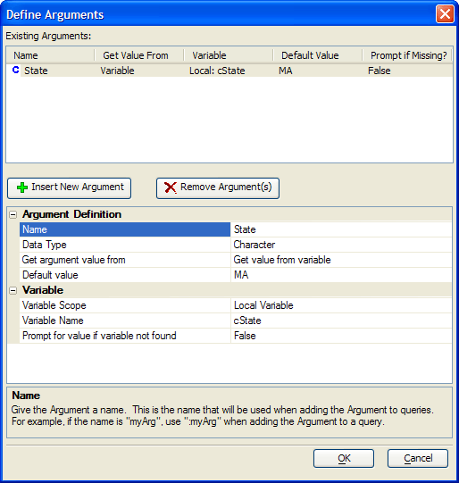

Define Arguments Dialog
You use Arguments with the List View Genie to pass parameters to the Define SQL Statement dialog box. To create an argument:
Click
 Insert New Argument.
Insert New Argument.Enter the name of the argument into the Argument Name > Name field.
Select the data type of the argument in the Argument Name > Data-type list. The options are:
"Character"
"Data"
"Logical"
"Numeric"
Define the type of source of the argument's value in the Argument Name > Get argument value from list. The options are:
"Always prompt for value"
"Get value from variable"
If you selected to get a value from a variable in step 4, select the variable's scope in the Variable > Variable Scope list. The options are:
"Local Variable"
"Session Variable"
"Global Variable"
Enter or select the name of the variable in the Variable > Variable Name list.
Optionally, select "True" in the Variable > Prompt for value if variable not found list if you want to prompt the user for a value at run time.
Click OK to continue.

See Also
Specify Filter Dialog, Specify Order Dialog, Define Prompt Dialog, Specify Filter Dialog
Supported By
Alpha Five Version 7 and Above